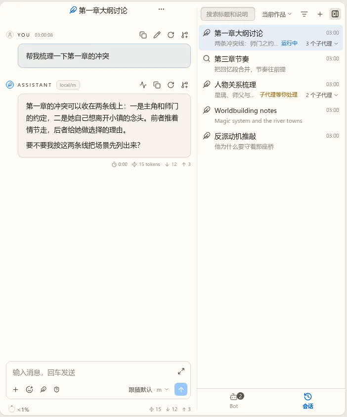
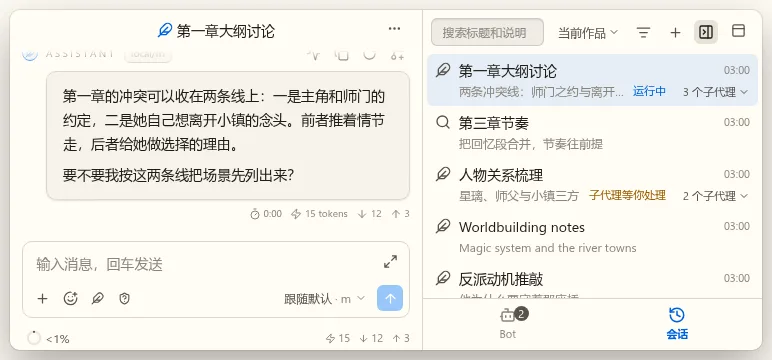
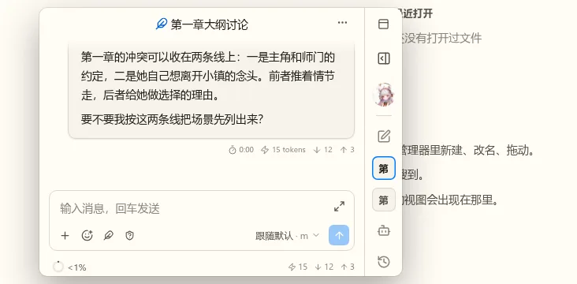
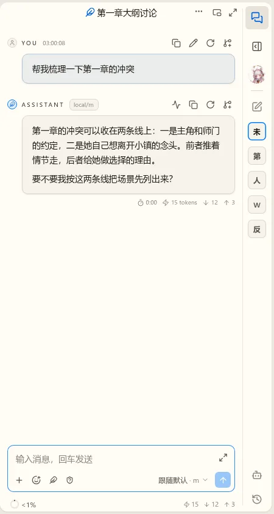

t20 第 5 轮：列表照 t03 的稿
列表照 t03 第 5 轮定下的稿，只换成底部导航、去掉顶上页签，这样行吗？
推荐行：会话行照会话面板（种类图标、标题、说明、状态、子代理个数，按最近活动排、不分组），bot 行照 IM（最后一句话、在跑时蓝字），都是 t03 定过的；列表宽缺省改成 300（t03 稿的宽），260 时搜索框挤。
停靠展开 · 会话

停靠展开 · Bot
浮动展开

浮动收着

展开收起按钮按 B（收着在窄列顶上，展开在搜索行右端），看了这版定下吗？
你上一轮倾向 B；放进 t03 的列表后搜索行多一个按钮，浮动窗里和“回到停靠”挨着，300 宽还放得下。
收着

展开
直接修，不用答
| 哪里 | 改成什么 |
|---|---|
| 会话页的搜索框 | 占满搜索行里剩下的宽度（稿里还只有一截） |
| 未读数 | 中性深色小胶囊，不用强调色（强调色只给当前项）；有等你处理时用 warning 色 |
| 搜索框的提示文字 | 只写“搜索” |
已定
- 浮动窗展开着拖动不再变小；一列按钮对齐到同一条中线；轨宽手柄亮起时是细线（已修并合入）
- 归位后再浮动用上次的位置与大小（已做并合入）
- 收着时窄列（侧柜）保留；展开时底下三个按钮落到列表底部成横排导航（第 2 轮附言）
- 结构按第 3 轮：收着窄列照旧，展开后窄列让位、列表底部是 Bot｜会话；展开收起按钮换个位置（第 3 轮附言，本轮第一题）
- 右栏有别的容器时，展开的列表顶上一行入口；只有消息时不加（第 3 轮）
- 列表回到 t03 第 5 轮定下的稿；第 3、4 轮的三个方向与第 1 轮的首字方块作废（第 4 轮后会话里）